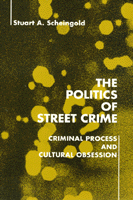

America's contradictory attitudes toward crime: repellent danger versus media glamorization
America's contradictory attitudes toward crime: repellent danger versus media glamorization


 America's contradictory attitudes toward crime: repellent danger versus media glamorization
America's contradictory attitudes toward crime: repellent danger versus media glamorization

|  |
The Politics of Street CrimeCriminal Process and Cultural ObsessionStuart A. Scheingoldpaper EAN: 978-1-56639-024-8 (ISBN: 1-56639-024-9) |
"Scheingold is a master of synthesis and insight, and this book reflects it. He does a marvelous job of digesting major research studies, and reflecting and building on them in the presentation of his own research. The result in this study is a masterful analysis of crime policy. And unlike others who like to theorize, Scheingold’s analysis is firmly rooted in empirical research. In short, his work is a mode/ of scholarship."
—Malcolm Feeley, School of Law, University of California, Berkeley
Americans find street crime terrifying and repellent. Yet we vicariously seek it out in virtually all of our media: books, newspapers, television, films, and the theatre. Stuart Scheingold confronts this cultural contradiction and asks why street crime is generally regarded in the trivializing and punitive images of cops and robbers that attribute crime to the willful acts of flawed individuals rather than to the structural shortcomings of a flawed society. In his case study of the police and criminal courts in the community he calls "Cedar City," a medium-sized city in the Western United States, Scheingold examines the effects of this cultural contradiction and these punitive predispositions on politics and policy making.
"Scheingold is wonderful in piecing together the complex set of variables which affect decision making by cops, prosecutors, and judges. And his synthesis of these variables paints the best picture I know of the complicated ways in which legal, policy, and political variables interact."
—Milton Heumann, Department of Political Science, Rutgers University
Read a review from Law & Politics Book Review, Volume 1.7 (October 1991).
Tables and Figures
Preface
1. Street Crime, Criminology, and the State
Criminological Discourse •
The Cultural Resonance of Volitional Criminology •
The Political Resonance of Volitional Criminology
2. The Politicization of Street Crime
Politicization •
Patterns of Politicization •
Public Quiescence •
The Law and Order Coalition •
Containing Politicization
3. Policy, Politics, and the Police
Patterns of Policy Change •
The Resilience of Traditional Policing •
Lurching toward Reform •
The Politics of Police Reform
4. Policy, Politics, and the Criminal Courts
Patterns of Policy Change •
Prosecutors: The Triumph of Reform •
Judges: The Politics of Independence
5. Politics, Criminology, and Crisis
Criminology and Policy •
The symbolic Politics of Street Crime •
Politicization and Policy
Notes
Bibliography
Index
 | Stuart A. Scheingold is a Professor in the Department of Political Science at the University of Washington. |
Political Science and Public Policy
Law and Criminology
© 2015 Temple University. All Rights Reserved. This page: http://www.temple.edu/tempress/titles/706_reg.html.